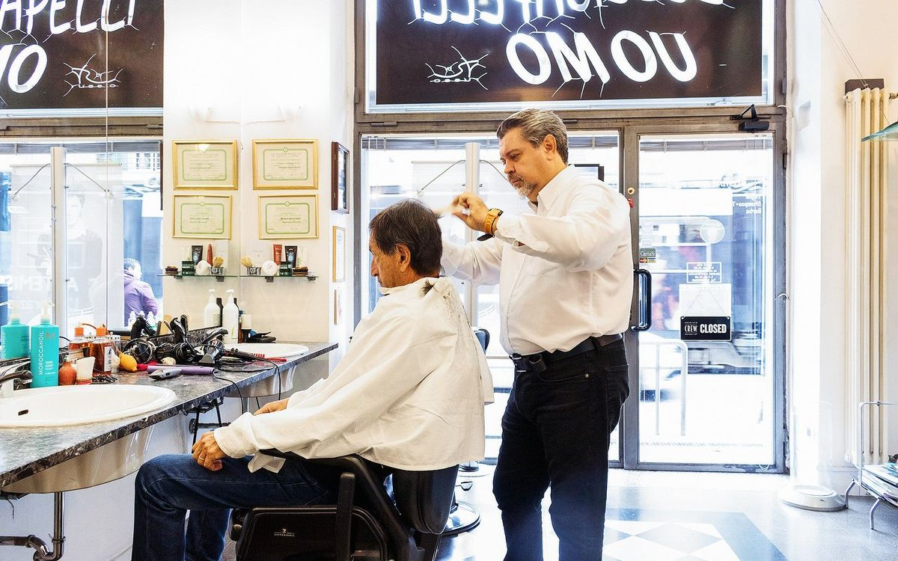
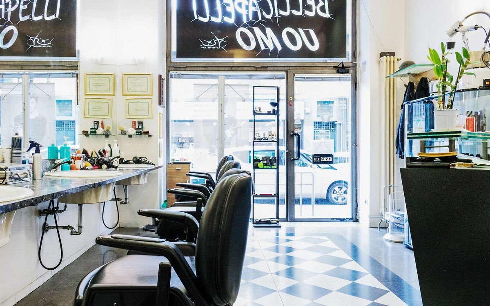
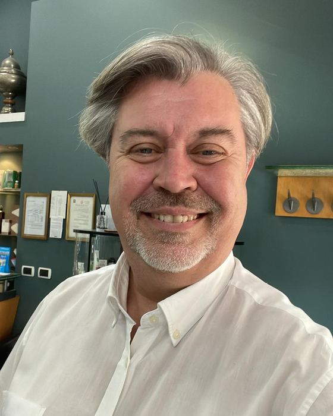
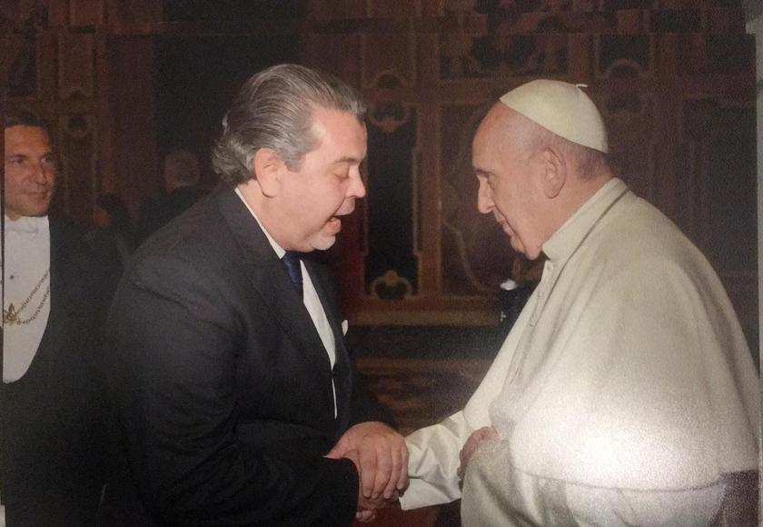
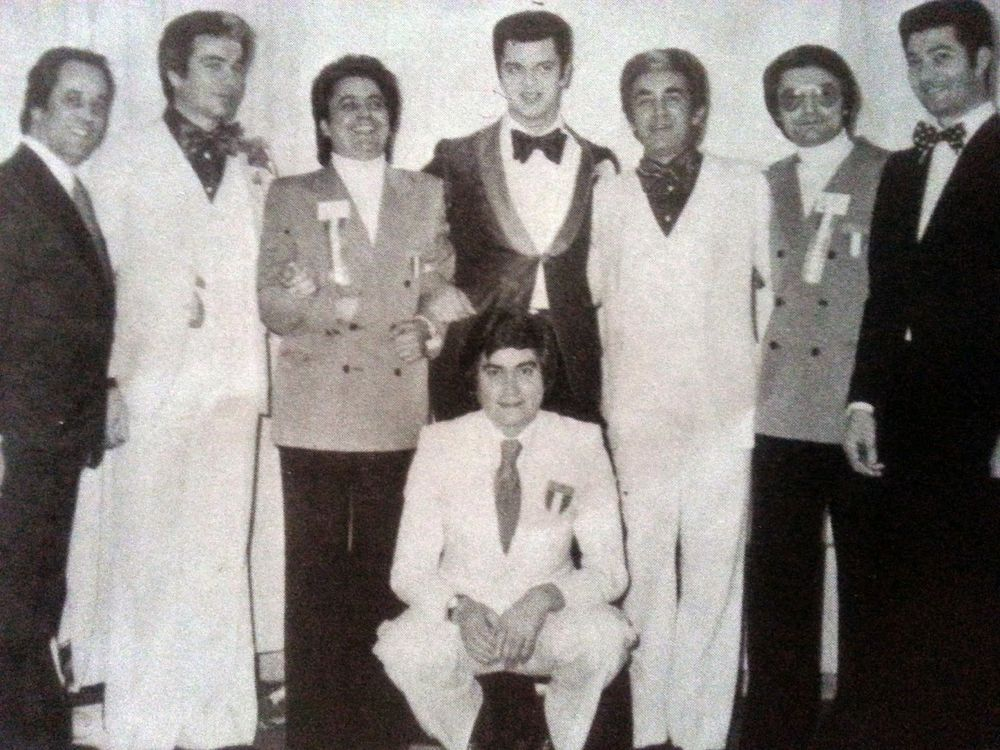
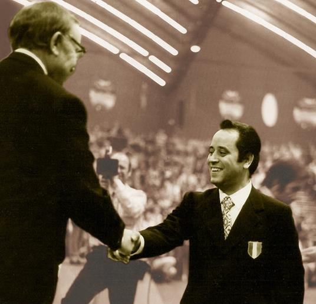
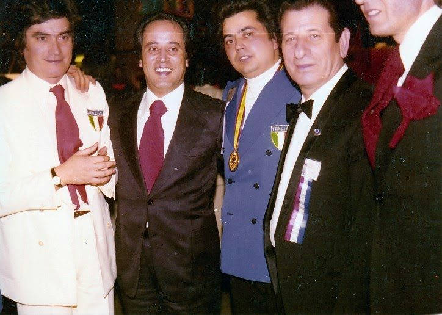
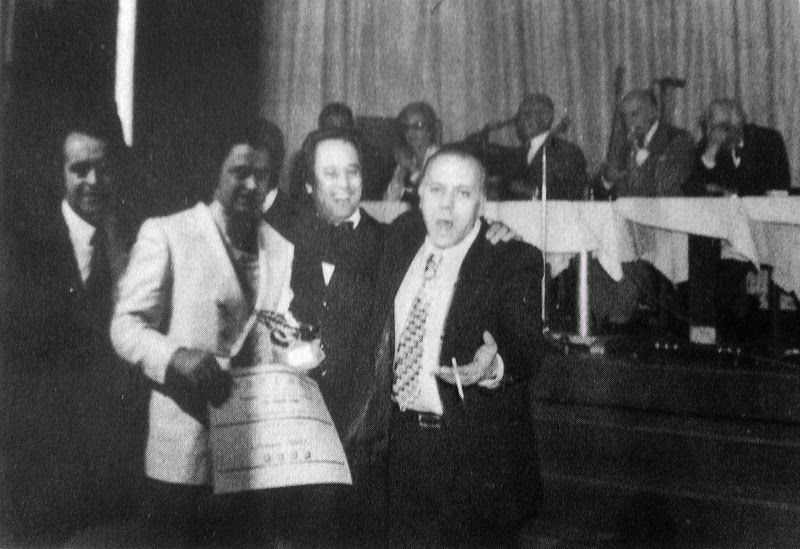
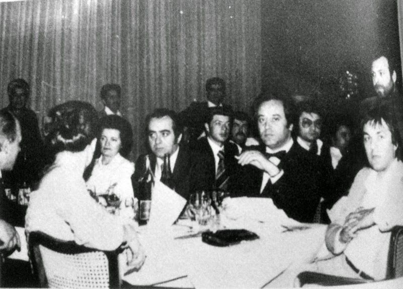
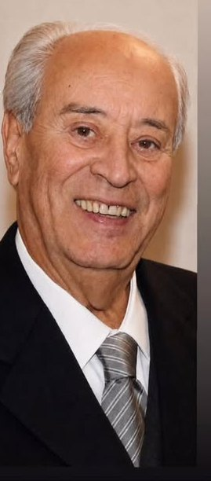

1938
Nasce VincenzoVincenzo is born
Cerignola, provincia di Foggia, 26 gennaio.Cerignola, province of Foggia, 26 January.

Parrucchiere e barbiere. Dal 1998, la stessa porta.Hairdresser and barber. Since 1998, the same door.
Raffaele Russo, maestro d'arte dell'Accademia A.N.A.M. Trentacinque anni di forbici e rasoio, imparati da suo padre Vincenzo, campione del mondo. Raffaele Russo, maestro d'arte of the A.N.A.M. Academy. Thirty-five years of scissors and razor, learned from his father Vincenzo, world champion.
Un salone di quartiere con una scuola mondiale dietro. Sei postazioni, un solo maestro, e la consulenza prima delle forbici. A neighbourhood salon with a world-class schooling behind it. Six chairs, one master, and the consultation before the scissors.
In via Meda dal 1998, nello stesso locale, che è di sua proprietà. Prima: dieci anni accanto a suo padre e gli anni all'estero.On via Meda since 1998, in the same premises, which he owns. Before that: ten years at his father's side and the years abroad.
Raffaele Russo, maestro d'arte maschile e femminile dell'Accademia A.N.A.M.Raffaele Russo, maestro d'arte in men's and women's hairdressing, A.N.A.M. Academy.
Parigi, Londra, Amsterdam, Barcellona: ne è tornato con un salone pensato per una clientela internazionale, dove si parla italiano e inglese e dove metà dei clienti entra ancora senza appuntamento.Paris, London, Amsterdam, Barcelona: he came back with a salon built for an international clientele, where Italian and English are both spoken and half the clients still walk in without an appointment.
Ha insegnato il mestiere ad altri professionisti prima di dedicarsi soltanto ai suoi clienti. È il motivo per cui qui la consulenza viene prima delle forbici: capire la testa che si ha davanti è la parte che si impara per ultima.He taught the trade to other professionals before devoting himself to his own clients. It is why, here, the consultation comes before the scissors: reading the head in front of you is the part you learn last.



Fotografati in salone, con la luce che c'è. Tagli uomo a forbice e rasoio, colore e balayage, pieghe e onde. Trascinate per scorrere, toccate per ingrandire.Photographed in the salon, in the light we have. Men's scissor and razor cuts, colour and balayage, blow-dries and waves. Drag to scroll, tap to enlarge.
Raffaele ha imparato da suo padre Vincenzo, che il mestiere l'ha portato fino al titolo mondiale. Non è una catena e non vuole diventarlo: è un mestiere passato di mano una volta sola.Raffaele learned from his father Vincenzo, who took the craft as far as a world title. Not a chain, and it never wanted to be: a trade handed over exactly once.

Cerignola, provincia di Foggia, 26 gennaio.Cerignola, province of Foggia, 26 January.
Parte dalla Puglia il 17 gennaio con un mestiere da imparare e nessun contatto in città.He leaves Puglia on 17 January with a trade to learn and no contacts in the city.
L'apprendistato comincia l'8 gennaio. Da qui nascono i negozi di via Gaetano Negri e Santa Maria Segreta, dove passeranno Montanelli, Pirelli, Moratti, Spadolini, Rivera.His apprenticeship begins on 8 January. His own shops on via Gaetano Negri and Santa Maria Segreta follow — where Montanelli, Pirelli, Moratti, Spadolini and Rivera will sit.
Il titolo mondiale di acconciatura maschile, con un taglio scolpito a rasoio — la tecnica che darà il titolo al suo libro.The world title in men's hairdressing, with a cut sculpted using a razor — the technique that later gave his book its title.


Guida tecnica nazionale dell'Accademia, giurato italiano ai Mondiali di New York. Riceve l'Ambrogino d'Oro del Comune di Milano.National technical lead of the Academy, Italy's juror at the New York World Championships. He receives Milan's Ambrogino d'Oro.


Dopo dieci anni accanto al padre e gli anni tra Parigi, Londra, Amsterdam e Barcellona, apre il suo salone. Locale di proprietà, mai spostato.After ten years at his father's side and years between Paris, London, Amsterdam and Barcelona, he opens his own salon. He owns the premises, and has never moved.
Per gli ottant'anni di Vincenzo esce l'autobiografia, presentata alla Camera di Commercio di Milano.Vincenzo's autobiography is published for his eightieth birthday and launched at the Milan Chamber of Commerce.
Vincenzo si è spento il 9 maggio, a 88 anni. La bottega di suo figlio è aperta.Vincenzo died on 9 May, aged 88. His son's shop is open.
Passo il tempo nel negozio di mio figlio Raffaele, in via Meda.I spend my time in my son Raffaele's shop, on via Meda.

L'autobiografia di Vincenzo Russo: da un paese della Puglia alle teste che hanno fatto Milano. Scritta a ottant'anni, con le fotografie delle gare.Vincenzo Russo's autobiography: from a small town in Puglia to the heads that built Milan. Written at eighty, with photographs from the competitions.
Acquista il libroBuy the book ↗Prezzi di quartiere, senza coupon e senza offerte lampo. Quello che leggete è quello che pagate, e comprende la consulenza iniziale e il caffè.Neighbourhood prices, with no coupons and no flash offers. What you read is what you pay, and it includes the initial consultation and a coffee.
Su preventivo:On quotation: balayage e shatush, extensions, trattamenti alla cheratina e al collagene, permanente, servizio sposa e sposo, servizio a domicilio, pacchetti di abbonamento.balayage and shatush, extensions, keratin and collagen treatments, perms, bride and groom service, home service, subscription packages.
“Ascolta prima di tagliare. Raro.”“He listens before he cuts. Rare.”
Cliente TreatwellTreatwell client“Mani esperte, mestiere vero.”“Expert hands, a real craft.”
Cliente TreatwellTreatwell client“Ci torno da anni, non cambio.”“I've come back for years. I won't change.”
Cliente TreatwellTreatwell clientZona Navigli–Tibaldi, dieci minuti a piedi da Porta Genova. Si entra anche senza appuntamento.Navigli–Tibaldi area, ten minutes' walk from Porta Genova. Walk-ins welcome.
| LunedìMonday | ChiusoClosed |
| MartedìTuesday | 9.00 — 18.00 |
| MercoledìWednesday | 9.00 — 18.00 |
| GiovedìThursday | 9.00 — 18.00 |
| VenerdìFriday | 9.00 — 18.00 |
| SabatoSaturday | 9.00 — 18.00 |
| DomenicaSunday | ChiusoClosed |
Fermata V.le Tibaldi / Via Meda — autobus 59, 71, 91; tram 3 e 15.V.le Tibaldi / Via Meda stop — buses 59, 71, 91; trams 3 and 15.